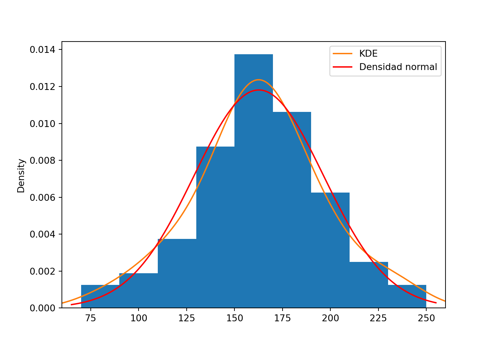

Chapítulo3 Estadística descriptiva con Python
En la primera parte de este capítulo haremos una revisión de medidas de tendencia central (media, mediana) y dispersión (rango, varianza, desviación estándar, coeficiente de variación y rango intercuartílico) además de las funciones y métodos que tenemos para su cálculo usando Python. En la segunda parte estudiaremos algunas opciones gráficas para el análisis exploratorio de datos: gráfico de barras, circulares, histograma, gráficos de dispersión, boxplot entre otros.
3.1 Medidas de tendencia central
3.1.1 Media aritmética
La media aritmética de un conjunto de \(n\) observaciones \(y_{1},y_{2},y_{3},\ldots , y_{n}\) se define como la suma de las observaciones dividida entre \(n\) (el número de datos). Se indica con \(\overline{y}\) \[\begin{equation} \overline{y}=\frac{\sum\limits_{i=1}^{n}y_{i}}{n}=\frac{y_{1}+y_{2}% +y_{3}+\cdots+y_{n}}{n} \tag{3.1} \end{equation}\]
Example 3.1 (Media aritmética) Considere las 15 mediciones que se muestran en la tabla 3.1, calcule la media aritmética.
| 8 | 3 | 6 | 6 | 5 |
| 10 | 8 | 8 | 7 | 11 |
| 4 | 5 | 7 | 7 | 7 |
Tenemos \(n=15\) datos cuya suma es \(\sum y_i = 102\) por lo tanto, la media aritmética es \(\overline{y}=\frac{ 102 }{ 15 } =6.8\)
Calcularemos de dos formas: primero ingresando los datos como un arreglo de NumPy y usando el método .mean() y luego usando las series de Pandas
import numpy as np
datosn=np.array([8,10,4,3,8,5,6,8,7,6,7,7,5,11,7])
datosn.mean()## 6.8Usando el método .mean() pero definido sobre lops objetos de tipo Series de Pandas sería
import pandas as pd
datosp=pd.Series([8,10,4,3,8,5,6,8,7,6,7,7,5,11,7])
datosp.mean()## 6.8Si quiere obtener la suma de los datos puede hacerlo, tanto con arreglos de NumPy como con Series de pandas, con el método .sum()
datosn.sum()
len(datosn)
datosp.sum()
datosp.count()mientas que el número de datos se obtiene con la función len() en el caso de arreglos de NumPy y con el método .count() en el caso de Series de Pandas
len(datosn)
datosp.count()de tal manera que otra forma de calcular la media seria
datosn.sum()/len(datosn)
datosp.sum()/datosp.count()3.1.1.1 Cálculo de la media aritmética cuando hay datos faltantes
Las dos opciones anteriores para calcular la media usando Pandas o usando Numpy son equivalentes, sin embargo, en presencia de datos faltantes hay diferencias que es necesario considerar. A continuación se ilustran con ejemplos esas diferencias, el arreglo anp y la Serie apd creados a continuación tienen los mismos datos con uno faltante, calculemos la media
anp=np.array([3,5,1,np.nan])
anp.mean()## nanapd=pd.Series([3,5,1,np.nan])
apd.mean()## 3.0observe que el método .mean() definido sobre arreglos de NumPy regresa nan, mientras que .mean() de Pandas calcula la media de los datos disponibles. Hay dos formas de calcular la media cuando los datos están en un arreglo de NumPy en presencia de datos faltantes: una es usando el método .nanmean(); la otra es creando un nuevo arreglo a partir del arreglo original, quitando los datos faltantes y luego usar el método .mean()
anp=np.array([3,5,1,np.nan])
np.nanmean(anp)## 3.0ahora obtenemos un nuevo arreglo quitando los datos faltantes y luego se usa el método .mean()
anp=np.array([3,5,1,np.nan])
anp[~np.isnan(anp)].mean()## 3.0en el bloque de código anterior se ha usado la función isnan() que regresa un arreglo de valores lógicos, con True en las posiciones donde se encuentre un dato faltante y False en caso contrario. Observe que el resultado de isnan() está negado (precedido de ~), por lo tanto, en la última línea se están seleccionando, mediante indexación booleana (véase la sección 2.3.5.3.2), las entradas del arreglo anp donde hay datos, luego se calcula la media con el método .mean().
Example 3.2 (Media ponderada) Un comerciante ganadero necesita reunir un lote de 50 reces de año y medio de edad, para lo cual visita las diferentes subastas ganaderas de su región y compra, en la primera subasta 15 reces con un peso promedio de 120 kg, en la segunda un lote de 25 reces con un peso promedio 112 kg y por ultimo en la tercera subasta compra el último lote de 10 animales cuyo peso promedio es 125 kg. El comerciante debe reportar a la gerencia de su empresa el peso promedio del lote completo ¿cuál es el peso promedio del lote de 50 animales adquiridos?
El peso promedio de los 50 animales es el peso total dividida por 50. A partir de la ecuación (3.1) es claro que \(n\overline y = \sum_{i=i}^ny_i\), así que si multiplicamos el número de animales de cada lote por su peso promedio, obtenemos la suma de los pesos y sumando estas sumas obtenemos el peso total del lote de 50 animales, dividimos este total por el número de animales \(15+25+10\) obtenemos el peso promedio del lote de 50 animales, así \[\begin{align} \overline{y}=&\frac{n_1\overline{y}_1 + n_2\overline{y}_2 + n_3\overline{y}_3}{n_1+n_2+n_3} = \frac{15\times 120 + 25\times 112 + 10\times 125}{15+25+10 } \notag \\ = & \frac{1800 + 2800 + 1250}{50 }=\frac{5850}{50 } \notag \\ =&117 \tag{3.2} \end{align}\] note que no se trata de promediar los tres promedios, cuyo resultado seria 119.
El cálculo hecho anteriormente se conoce como un promedio ponderado. El promedio ponderado tiene en cuenta los diversos grados de importancia de los números en un conjunto de datos. Al calcular un promedio ponderado, cada número en el conjunto de datos \(y_i\) se multiplica por un peso predeterminado \(w_i\)
\[\begin{equation} \overline{y}_w=\frac{\sum\limits_{i=1}^{n}w_iy_{i}}{\sum\limits_{i=1}^{n}w_i} \tag{3.3} \end{equation}\] En el ejemplo 3.2 las ponderaciones son los tamaños de los lotes.
Para el cálculo de la media ponderada con Python, se cuenta en el paquete NumPy con la función average()
yi=np.array([120,112,125])
wi=np.array([15,25,10])
np.average(yi,weights=wi) ## 117.0En Pandas no se cuenta con una función o método que calcule medias ponderadas, pero no es difícil implementar la fórmula
yi=pd.Series([120,112,125])
wi=pd.Series([15,25,10])
(yi*wi).sum()/wi.sum() ## 117.0A continuación se define la función mediaponderada() que recibe los valores \(y_i\) y los pesos \(w_i\) como Series de Pandas y retorna la media ponderada.
def mediaponderada(y,w):
if type(y) is pd.Series and type(w) is pd.Series:
return (y*w).sum()/w.sum()
else:
print("Se requiere que w e y sean Series de Pandas") 3.1.2 Mediana
La mediana de un conjunto de \(n\) datos \(y_{1}, y_{2}, y_{3},\cdots, y_{n}\) es un valor tal que la mitad (50%) de las observaciones son menores o iguales que él y la otra mitad es mayor o igual que dicho valor.
Si \(y_{(1)}, y_{(2)}, \cdots, y_{(n)}\) es el conjunto de valores ordenados de menor a mayor, es decir, acomodados en orden creciente de magnitud, la mediana se obtiene como la observación que ocupa el lugar \(\frac{n+1}{2}\) en caso que \(n\) sea impar, o el promedio de las observaciones que ocupan los lugares \(\frac{n}{2}\) y \(\frac{n}{2}+1\) si \(n\) es un número par.
\[\begin{equation} M_e=\begin{cases} y_{\left(\frac{n+1}{2}\right)}& \text{ si } n \text{ es impar}\\ \frac{y_{\left(\frac{n}{2}\right)} +y_{\left(\frac{n}{2} +1\right)} }{2} & \text{ si } n \text{ es par} \end{cases} \tag{3.4} \end{equation}\] de acuerdo con la definición anterior, el algoritmo para calcular la mediana sería:
- Ordene los datos de menor a mayor
- En caso que el número de datos sea impar, tome la observación central, es decir, la que ocupa el lugar \(\frac{n+1}{2}\)
- En caso que el número de datos sea impar, promedie las dos observaciones centrales, es decir, las que ocupan los lugares \(\frac{n}{2}\) y \(\frac{n}{2}+1\)
Example 3.3 (Mediana) Considere las 15 mediciones que se muestran en la tabla 3.1, calculemos su mediana.
Los datos ordenados de menor a mayor se muestran en la tabla 3.2
| 3 | 4 | 5 | 5 | 6 |
| 6 | 7 | 7 | 7 | 7 |
| 8 | 8 | 8 | 10 | 11 |
Tenemos un número impar de datos \((n=15)\), luego la mediana es el dato que está en la posición \(\frac{n+1}{2}=\frac{16}{2}=8\) que corresponde a \(7\), este es el valor de la mediana de los datos.
Análogo a como se hizo en el ejemplo 3.1 calcularemos la mediana con NumPy usando el método .median()
np.median(datosn)## 7.0y con Pandas Usando el método .median() aplicable a Series, tenemos
datosp.median()## 7.0en caso de tener datos faltantes, el tratamiento es análogo a como se hizo con la media: si se tienen los datos en un arreglo de NumPy, contamos con la función .nanmedian()
anp=np.array([3,5,1,np.nan])
np.median(anp) # regresa nan
np.nanmedian(anp) # mediana de los datos disponibles si los datos se tienen como una Serie de Pandas, el método .median() calcula la mediana con los datos disponibles
apd=pd.Series([3,5,1,np.nan])
apd.median() # mediana con los datos disponibles 3.2 Medidas de dipersión
Cuando se describen datos no es suficiente con entregar medidas de tendencia central, para comprender la razón considere los siguientes datos
| Muestra 1 | 130 | 150 | 145 | 158 | 165 | 140 |
| Muestra 2 | 90 | 128 | 205 | 140 | 165 | 160 |
ingresemos los datos como una serie de pandas y calculemos su media
m1=pd.Series([130,150,145,158,165,140])
m2=pd.Series([90,128,205,140,165,160])
print("Medias: Muestra 1 %0.0f , Muestra 2 %0.0f" %(m1.mean(),
m2.mean())) ## Medias: Muestra 1 148 , Muestra 2 148Ambas muestras tienen media 148, es decir, \(\overline{y}_1=\overline{y}_2=148\). Sin embargo ¿Son similares los dos conjuntos de datos? Es claro que los datos de la muestra 1 son más parecidos entre ellos que los datos de la muestra 2. Formalmente, los datos de la muestra 2 son más heterogéneos, están más dispersos, o son más variables que los datos de muestra 1, sin embargo, la media es la misma. Así que además de las medidas de tendencia central, como la media o la mediana, se requieren medidas que den cuenta de la heterogeneidad, dispersión o variabilidad de los datos.
3.2.1 Rango
El Rango se define como la diferencia entre la observación más grande y la más pequeña.
\[\begin{equation} R=\max(y_i)-\min(y_i) \tag{3.5} \end{equation}\]
Para la muestra 1, el máximo es \(165\) y el mínimo es \(130\) así que su rango es \(R_1=165-130=35\); mientras que para la muestra 2 se tiene \(R_2=205-90=115\). Observe que \(R_2\) es aproximadamente 3 veces \(R_1\), luego los datos de la muestra 2 están tres veces mas dispersos que los de la muestra 1. Calculemos el rango usando Pandas. Rango de la muestra 1
m1.max()-m1.min()## 35Rango de la muestra 2
m2.max()-m2.min()## 115Pandas no tiene una función que calcule el rango directamente pero no es difícil implementar una función
rango = lambda x: x.max() - x.min()
rango(m1)## 35rango(m2)## 115En el bloque de código anterior se ha creado lo que se conoce como una función lambda, que es como cualquier función de python, excepto que no tiene nombre al definirla (función anónima) y está contenida en una línea de código.
Funciones Lambda: son de la forma
lambda argumento(s) : expresiónlas funciones lambda aceptan uno o mas argumentos pero sólo una expresión.
Consideremos los siguientes datos y en cada caso calculemos el rango.
| Datos 1 | 1 | 3 | 5 | 8 | 9 |
| Datos 2 | 1 | 5 | 5 | 5 | 9 |
d1=pd.Series([1,3,5,8,9])
d2=pd.Series([1,5,5,5,9])
print("Rango 1=%0.0f, Rango 2=%0.0f"%(rango(d1),rango(d2))) ## Rango 1=8, Rango 2=8observe que el rango es el mismo, sin embargo, todos los datos del conjunto 1 son distintos, mientras que en los datos 2 hay 3 iguales, luego es claro que los datos 2 son más homogéneos que los datos 1. Esa es una desventaja del rango como medida de variabilidad o dispersión: ignora la información que hay entre el máximo y el mínimo, no tiene en cuenta toda la información en los datos. Se requiere una medida de dispersión que no pierda información, que use todas las observaciones. La medida de dispersión por excelencia es la varianza o su raíz cuadrada que se conoce como desviación estándar.
3.2.2 Varianza y desviación estándar
Dado un conjunto de \(n\) observaciones \(y_{1},y_{2},y_{3},\cdots, y_{n}\) con media aritmética \(\overline{y}\), se define la varianza como \[\begin{equation} S^2=\frac{(y_{1} - \overline{y})^2+(y_{2} - \overline{y})^2+\cdots+ (y_{n} - \overline{y})^2}{n-1}= \frac{\sum\limits_{i=1}^{n}(y_{i} - \overline{y})^2}{n-1} \tag{3.6} \end{equation}\]
Se define la desviación estándar, \(S\), como la raíz cuadrada positiva de la varianza. \[\begin{equation} S =\sqrt {S^{2}} =\sqrt{\frac{\sum\limits_{i=1}^{n}\left( y_{i}-\overline{y}\right) ^{2} }{n-1}} \tag{3.7} \end{equation}\]
Example 3.4 (Varianza y desviación estándar) Considere las 5 mediciones que se muestran en la tabla 3.3, calculemos su varianza y desviación estándar.
| 5 | 8 | 4 | 7 | 6 |
La media de los datos es 6, por tanto la varianza se calcula de la siguiente forma \[\begin{align*} S^2&=\frac{(5 - 6 )^2+(8 - 6)^2+(4 - 6 )^2+ (7 - 6 )^2+(6 - 6 )^2}{5-1}\\ &=\frac{(-1 )^2+(2 )^2+(-2 )^2+ (1 )^2+(0 )^2}{4} \\ &=\frac{1 +4 +4+ 1 + 0 }{4} \\ &=\frac{10 }{4}=2.5 \end{align*}\]
La desviación estándar es \[S=\sqrt{S^2}=\sqrt{2.5}=1.5811388\]
Realicemos los cálculos anteriores con Pandas y con NumPy
datospd=pd.Series([5,8,4,7,6])
datospd.var()## 2.5datospd.std()## 1.5811388300841898Los mismos cálculos usando NumPy se efectúan de la siguiente manera
datosnp=np.array([5,8,4,7,6])
datosnp.var(ddof=1)## 2.5datosnp.std(ddof=1) ## 1.5811388300841898Note el uso de la opción ddof=1, esto es obligatorio para que se calcule la varianza según la fórmula (3.6) ya que la fórmula implementada en el método .var() de NumPy es
\[\begin{equation*}
\frac{\sum\limits_{i=1}^{n}\left(
y_{i}-\overline{y}\right) ^{2}
}{n-\text{ddof}}
\end{equation*}\]
y el valor predeterminado es ddof=0 , análogo para el método .std()
3.2.3 Cuantiles
Los cuantiles son medidas de localización, ellos nos indican el valor en los datos que ocupará la posición que nos interese respecto de todo el conjunto de datos. Podemos decir que los cuantiles son medidas de posición que dividen a la distribución de los datos en un cierto número de partes, de tal forma que en cada una de ellas hay el mismo número de datos. Los cuantiles más usados son: cuartiles, dividen la distribución de los datos en cuatro partes: 0 a 25%,25% a 50% , 50% a 75% y 75% a 100%; se acostumbra a notarlos por \(Q_1\), \(Q_2\) y \(Q_3\) deciles, dividen la distribución de los datos en diez partes: 0 a 10%, 10% a 20%, \(\cdots\), 90% a 100%, se notan por \(D_1,\cdots,D_9\); percentiles, dividen la distribución de los datos en 100 partes: 0 a 1%, 1% a 2%, \(\cdots\), 99% a 100%. En general los percentiles se notan por \(P_1,P_2,\cdots,P_{99}\), de esa forma es claro que, por ejemplo, \(P_{50}=Q_1=D_5\) y \(P_{75}=Q_3\).
3.2.3.1 Algoritmos para el cálculo de cuantiles
Hay un número grande de definiciones distintas usadas para cuantiles muestrales en los paquetes para cálculo estadístico. Incluso es frecuente que dentro de un paquete se use una definición para calcular los cuantiles explícitamente mientras que puede usar otra para producir el boxplot, para el gráfico de probabilidad o para el QQ-plot (Hyndman and Fan 1996).
El cuantil \(p\) de una distribución se define como
\[\begin{equation}
Q(p)=F^{-1}(p)=\inf\{x: F(x)\geq p\},\hbox{ para }0<p<1\tag{3.8}
\end{equation}\]
los cuantiles muestrales proporcionan una estimación no paramétrica de su contraparte poblacional basado en un conjunto de observaciones independientes \(X_1,X_2\cdots, X_n\) de la distribución \(F\). Sea \(X_{(1)} ,X_{(2)}\cdots, X_{(n)}\) los estadísticos de orden de \(X_1,X_2\cdots, X_n\) y sea \(\widehat Q_i(p)\) la \(i-\)ésima definición del cuantil muestral. Los cuantiles muestrales definidos en los paquetes de cálculo estadístico están todos basados en uno o dos estadísticos de orden, y se pueden escribir como
\[\begin{equation}
\widehat Q_i(p)=(1-\gamma )X_{(j)}+\gamma X_{(j+1)} \hbox{ donde } \frac {j-m}{n} \leq p < \frac{j-m+1}{n} \tag{3.9}
\end{equation}\]
para algún \(m\in \mathbb{R}\) y \(0\leq \gamma \leq 1\). El valor de \(\gamma\) es función de \(j=\lfloor pn + m \rfloor\) y \(g=pn+m-j\), en donde \(\lfloor u \rfloor\) es el mayor entero que es menor o igual que \(u\). Tomando
\[\begin{equation*}
p_k=\frac{k-\alpha}{n-\alpha-\beta+1}
\end{equation*}\]
e interpolando entre los puntos \((k,X_{(k)})\) obtenemos un cuantil muestral de la forma (3.9) tamando \(m=\alpha+p(1-\alpha-\beta)\), con \(\alpha=\beta=1\) y \(\gamma=g\). De esta manera los paquetes NumPy y Pandas implementan los distintos métodos de cálculo de los cuantiles muestrales (fijados con el argumento interpolation). Por ejemplo, tomando \(\alpha=\beta=1\) y \(\gamma=g\) se tiene la interpolación lineal, que es la opción predeterminada en la función (en el caso de NumPy) o el método quantile() en el caso de Pandas. A continuación usamos los datos de la tabla 3.1, los cuales se muestran ordenados de menor a mayor en la tabla 3.2, para ilustrar el procedimiento. Calcularemos el percentil 25 o, lo que es lo mismo, el primer cuartil \(Q_1\). Los datos se han ingresado en el arreglo de NumPy como datosn y en una Serie de Pandas como datosp
# datos ordenados
datosO=datosp.sort_values()
# numero de datos
n=len(datosO)
# el percentil 25 (primer cuartil)
p=0.25
alpha=1
beta=1
m=alpha+p*(1-alpha-beta)
j=np.int64(np.floor(p*n+m))
g=p*n+m-j
gamma=g
(1-gamma)*datosO.values[j-1]+gamma*datosO.values[j]## 5.5Note que en la última línea del bloque de código anterior se ha implementado la ecuación (3.9) con \(\alpha=\beta=1\) y \(\gamma=g\).
El primer cuartil de los datos de la tabla 3.1 usando el método de interpolación lineal es 5.5. El nombre interpolación es debido a que para el cálculo se interpola la función de distribución empírica (ecdf) que es una función escalonada, por la naturaleza discreta de los doatos, de la forma como se hace la interpolación aparecen los distintos métodos disponibles en los paquetes de cálculo estadístico.
3.2.3.2 Cálculo de cuantiles con Pandas
Si tienes los datos como una serie de Pandas puedes usar el método .quantile() mientras
# interpolación lineal, opción predeterminada
datosp.quantile(0.25)## 5.5Si usa datosp.quantile(), sin entregar el valor del percentil, se calcula la mediana. Si desea calcular más de un percentil se debe entregar una lista con los valores de las probabilidades. Por ejemplo, en la siguiente línea de código se calcula el mínimo, el primer y tercer cuartil, el percentil 85 y el máximo
datosp.quantile(q=[0,0.25,0.75,0.85,1])A continuación se muestran los otros tipos de interpolación disponibles en Pandas:
datosp.quantile(0.25,interpolation='lower')
datosp.quantile(0.25,interpolation='higher')
datosp.quantile(0.25,interpolation='midpoint')
datosp.quantile(0.25,interpolation='nearest') obteniendo como respuesta 5, 6, 5.5 y 6 respectivamente.
3.2.3.3 Cálculo de cuantiles con NumPy
Si se prefiere usar NumPy contamos con la función quantile(), veamos ejemplos de su uso, calculando el percentil 25 usando los datos de la tabla 3.2, los cuales se tiene en un arreglo de NumPy con nombre datosn
np.quantile(datosn,q=0.25)## 5.5Al igual que Pandas la interpolación usada por NumPy es la lineal. En NumPy el valor del percentil a calcular es obligarotio (a diferencia de Pandas que por defecto calcula la mediana) y puede ser un valor real o un arreglo de valores entre cero y uno. A continuación se calcula el mínimo, el primer y tercer cuartil, el percentil 85 y el máximo
np.quantile(datosn,q=[0,0.25,0.75,0.85,1])## array([ 3. , 5.5, 8. , 8. , 11. ])para los distintos tipos de interpolación se procede de manera similar a como se hace en Pandas
np.quantile(datosn,q=0.25,interpolation='lower')
np.quantile(datosn,q=0.25,interpolation='higher')
np.quantile(datosn,q=0.25,interpolation='midpoint')
np.quantile(datosn,q=0.25,interpolation='nearest') ## <string>:1: DeprecationWarning: the `interpolation=` argument to quantile was renamed to `method=`, which has additional options.
## Users of the modes 'nearest', 'lower', 'higher', or 'midpoint' are encouraged to review the method they. (Deprecated NumPy 1.22)de las líneas de código anterior se obtiene como respuesta 5, 6, 5.5 y 6 respectivamente.
3.3 Gráficos
3.3.1 Graficos para datos categóricos
Se ilustrará la realización de gráficos de barras y circulares (torta) en Python con los datos de la tabla 3.4 los cuales fueron tomados de (Webster 2000).
Example 3.5 (Graficio de barras) En una escala de 1 a 4, siendo 4 el mejor, un grupo de expertos califica la responsabilidad social empresarial de 50 organizaciones clasificadas como publicas, indicadas con un 1 en los datos de la tabla 3.4; privadas indicadas con un 2 o controladas por el gobierno, indicadas con un 3.
| Tipo | Calif | Tipo | Calif | Tipo | Calif | Tipo | Calif | Tipo | Calif |
|---|---|---|---|---|---|---|---|---|---|
| 1 | 1 | 3 | 3 | 2 | 4 | 1 | 2 | 1 | 1 |
| 2 | 2 | 1 | 4 | 3 | 1 | 2 | 3 | 2 | 3 |
| 2 | 3 | 1 | 2 | 1 | 2 | 3 | 2 | 3 | 2 |
| 3 | 2 | 2 | 3 | 3 | 4 | 1 | 1 | 1 | 1 |
| 1 | 4 | 3 | 1 | 2 | 1 | 3 | 4 | 2 | 4 |
| 2 | 2 | 3 | 2 | 2 | 2 | 2 | 2 | 1 | 1 |
| 3 | 3 | 2 | 3 | 3 | 3 | 1 | 3 | 2 | 2 |
| 2 | 2 | 1 | 2 | 1 | 1 | 3 | 1 | 3 | 3 |
| 1 | 1 | 2 | 1 | 2 | 4 | 2 | 4 | 1 | 2 |
| 2 | 2 | 3 | 4 | 3 | 4 | 3 | 2 | 2 | 1 |
Para presentar gráficamente los datos, primero se resumen en una tabla de contingencia (de doble entrada) y luego, a partir de la tabla, se elaboran gráficos de barra y torta.
Seguidamente leemos los datos y los organizamos en un DataFrame de pandas como se muestra a continuación
import pandas as pd
tipo=[1,2,2,3,1,2,3,2,1,2,3,1,1,2,3,3,2,1,2,3,2,3,1,3,2,2,3,1,2,3,1,2,3,1,3,2,1,3,2,3,1,2,3,1,2,1,2,3,1,2]
clasi=[1,2,3,2,4,2,3,2,1,2,3,4,2,3,1,2,3,2,1,4,4,1,2,4,1,2,3,1,4,4,2,3,2,1,4,2,3,1,4,2,1,3,2,1,4,1,2,3,2,1]
df=pd.DataFrame({'Tipo':tipo,'Clasi':clasi})
df.head()## Tipo Clasi
## 0 1 1
## 1 2 2
## 2 2 3
## 3 3 2
## 4 1 4En el DataFrame de nombre df se encuentran los datos pero en formato numérico, como el tipo de empresa y la calificación son variables categóricas (factores), es necesario hacer la conversión
tipof={1:"Publica",2:"Privada",3:"Controlada"}
clasif={1:"Cal1",2:"Cal2",3:"Cal3",4:"Cal4"}
df["Tipo"]=df["Tipo"].replace(tipof)
df["Clasi"]=df["Clasi"].replace(clasif)
df.head()## Tipo Clasi
## 0 Publica Cal1
## 1 Privada Cal2
## 2 Privada Cal3
## 3 Controlada Cal2
## 4 Publica Cal4el bloque de código anterior reemplaza los datos numéricos por su equivalente según los nombres de las categorías, por ejemplo, en el caso de Tipo, 1:"Publica". Sin embargo, si se usa df.info() podemos verificar que el tipo de datos correspondiente a las columnas Tipo y Clasi en df es object, que es la forma como pandas identifica columnas que contienen texto. Aunque para los cálculos que haremos no es estrictamente obligatorio (pero si una buena práctica), a continuación se crea un factor o variable categórica, identificada por pandas como category, a partir de las columnas de texto Tipo y Clasi
df["Tipo"]=pd.Categorical(df["Tipo"])
df["Clasi"]=pd.Categorical(df["Clasi"])
df.info()## <class 'pandas.core.frame.DataFrame'>
## RangeIndex: 50 entries, 0 to 49
## Data columns (total 2 columns):
## # Column Non-Null Count Dtype
## --- ------ -------------- -----
## 0 Tipo 50 non-null category
## 1 Clasi 50 non-null category
## dtypes: category(2)
## memory usage: 564.0 bytesLa tabla de doble entrada o tabla de contingencia la obtenemos con la función crosstab() de Pandas, veamos
pd.crosstab(df.Tipo,df.Clasi) ## Clasi Cal1 Cal2 Cal3 Cal4
## Tipo
## Controlada 3 5 4 4
## Privada 3 7 5 4
## Publica 7 5 1 2si queremos que se adicionen las marginales a la tabla usamos la opción margins=True
pd.crosstab(df.Tipo,df.Clasi,margins=True)## Clasi Cal1 Cal2 Cal3 Cal4 All
## Tipo
## Controlada 3 5 4 4 16
## Privada 3 7 5 4 19
## Publica 7 5 1 2 15
## All 13 17 10 10 50Para obtener las tablas de frecuencias relativas (o porcentajes) con respecto al total general, total de filas o total de columnas se usa la opción normalize, cuyas opciones son: 'all' para porcentajes con respecto al total general, 'index' para porcentajes con respecto al total de fila y 'columns' para porcentajes con respecto al total de columna
pd.crosstab(df.Tipo,df.Clasi,normalize='all',margins=True)## Clasi Cal1 Cal2 Cal3 Cal4 All
## Tipo
## Controlada 0.06 0.10 0.08 0.08 0.32
## Privada 0.06 0.14 0.10 0.08 0.38
## Publica 0.14 0.10 0.02 0.04 0.30
## All 0.26 0.34 0.20 0.20 1.00La tabla anterior muestra las frecuencias relativas con respecto al total general \((n_{ij}/N)\), para obtener los porcentajes solo falta multiplicar por 100, de la siguiente forma
pd.crosstab(df.Tipo,df.Clasi,normalize='all',margins=True)*1003.3.1.1 Gráfico de barras
Primero presentamos los datos de tipo y clasificación, separadamente en un gráfico de barras simple. Para eso a continuación realizamos la tabulación a partir de cada columna, luego se usa el método .plot(), definido sobre Series de Pandas, con la opción kind=bar
tablaC=df.Clasi.value_counts()
tablaT=df.Tipo.value_counts()
tablaC.plot(kind='bar',rot=30)
tablaT.plot(kind='bar',rot=30)Figure 3.1: Gráfico de barras. Izquierda: datos de clasificación. Derecha: datos de tipo de empresa
Se puede mostrar la información de la figura 3.1 en un solo gráfico de barras que puede ser el de barras múltiples (figura 3.2 ) o el de barras apiladas (figura 3.3 )
tabla2=pd.crosstab(df.Tipo,df.Clasi)
tabla2.plot(kind='bar',alpha=0.7,rot=0)
plt.xlabel("Tipo de empresa")
plt.ylabel("Frecuencia")Figure 3.2: Gráfico de barras múltiples con los datos de la tabla 3.4.
El gráfico de barras apiladas consigue con la opción stacked=True, también se pueden graficar las barras de cada categoría en un panel distinto, eso se logra con la opción subplots=True.
Figure 3.3: Gráfico de barras apiladas con los datos de la tabla 3.4.
tabla3=pd.crosstab(df.Clasi,df.Tipo)
tabla3.plot(kind="bar", subplots=True,title="",xlabel="")
plt.show()3.3.1.2 Gráfico circular
Este gráfico se basa en una proporcionalidad entre la frecuencia y el ángulo central de una circunferencia, de tal manera que a la frecuencia total le corresponde el ángulo central de 360 grados. El ángulo que le corresponde a la categoría \(i\) se determina por
\[\begin{equation*}
\theta_i=\frac{f_i\times 360}{\sum f_i}
\end{equation*}\]
donde \(f_i\) es la frecuencia de la \(i-\)ésima categoría. El gráfico circular se puede elaborar con el método .pie()
tablaT.plot(kind='pie',autopct='%1.1f%%')Figure 3.4: Gráfico circular con los datos de tipo de empresa (tabla 3.4)
3.3.2 Gráfico para datos cuantitativos
Para los ejemplos de esta sección usaremos los datos de la tabla 3.5, que corresponden a medidas de resistencia a la tensión, en libras por pulgada cuadrada (psi), de 80 muestras de una nueva aleación de aluminio litio que está siendo evaluada como posible material para la fabricación de elementos estructurales de aeronaves, tomados de (Mongomery and Runger 2003).
3.3.2.1 Gráfico de tallos y hojas
Este gráfico se utiliza para mostrar la frecuencia absoluta en diferentes clases de forma similar a la tabla de distribución de frecuencias o un histograma. Este gráfico, que principalmente se recomienda para conjuntos de datos pequeños, es una presentación tabular donde cada valor de datos se divide en un “tallo” (el primer dígito o dígitos) y una “hoja” (generalmente el último dígito).
| 105 | 153 | 181 | 158 | 134 | 101 | 145 | 150 |
| 221 | 174 | 158 | 133 | 178 | 171 | 171 | 135 |
| 183 | 120 | 176 | 207 | 76 | 165 | 148 | 196 |
| 186 | 168 | 110 | 180 | 167 | 172 | 158 | 201 |
| 121 | 167 | 163 | 190 | 184 | 158 | 160 | 200 |
| 181 | 141 | 131 | 193 | 135 | 169 | 175 | 176 |
| 180 | 245 | 154 | 194 | 229 | 199 | 149 | 150 |
| 143 | 228 | 115 | 133 | 146 | 151 | 87 | 170 |
| 97 | 174 | 160 | 156 | 218 | 142 | 160 | 118 |
| 154 | 199 | 208 | 123 | 157 | 163 | 237 | 149 |
El procedimiento para el construir el gráfico de tallos y hojas es:
Separe cada observación/dato en un tallo que consistirá en todos excepto el dígito más a la derecha y la hoja, el dígito más a la derecha.
La hoja debe tener solo un dígito, mientras que el tallo puede tener tantos dígitos como sea posible.
Escriba el tallo en una columna vertical con el más pequeño en la parte superior y luego dibuje una línea vertical a la derecha de esta columna.
Escribe cada hoja correspondiente en la fila a la derecha de su tallo justo después de la línea vertical, en orden ascendente desde el tallo.
Para hacer este gráfico en Python se cuenta con la función stem_graphic() del módulo stemgraphic el cual debe estar previamente instalado. A continuación se leen los datos de la tabla 3.5 como una Serie de Pandas aunque la función también acepta listas y arreglos de NumPy
t11=pd.Series([105,221,183,186,121,181,180,143,
97,154,153,174,120,168,167,141,
245,228,174,199,181,158,176,110,
163,131,154,115,160,208,158,133,
207,180,190,193,194,133,156,123,
134,178,76,167,184,135,229,146,
218,157,101,171,165,172,158,169,
199,151,142,163,145,171,148,158,
160,175,149,87,160,237,150,135,
196,201,200,176,150,170,118,149])A continuación se importa y se hace el llamado a la función stemgraphic. La opción scale = 10 indica que las clases serán de amplitud 10 esto es. 70-80, 80-90, y así sucesivamente. La opción asc=False es para que el ordenamiento de los datos se haga de menor a mayor y no al contrario, como es la configuración predeterminada.
from stemgraphic import stem_graphic
fig=stem_graphic(t11, scale = 10,asc=False)
plt.show()Figure 3.5: Gráfico de tallos y hojas a partir de los datos de la tabla 3.5
3.3.2.2 Histograma y tablas de frecuencias
Un histograma es una representación de la distribución de los datos. Para su construcción se agrupan los valores en rangos o intervalos conocidos como clases y se registra cuántos datos pertenecen a cada clase, este número se conoce como la frecuencia de la clase. En el eje horizontal de un plano cartesiano se ubican los límites de los intervalos y en el vertical se ubican las frecuencias, encima de cada intervalo se dibuja una barra cuya altura es igual a la frecuencia de su intervalo correspondiente. Un parámetro importante para la construcción del histograma es el número de intervalos a tomar, de forma predeterminada en NumPy y Pandas este valor viene fijado en 10, con la opción bins = 10, aunque en la literatura se encuentran varias fórmulas empíricas como \(\sqrt n\), \(1+3.3\log_{10}(n)\) o \(\ln{n}/\ln{2}\), entre otras. Con la información del número de intervalos de clase, las funciones de Python para graficar el histograma calculan los límites de los intervalos, sin embargo, también es posible entregar a la función de manera explícita los límites a usar. Veamos como se grafica el histograma, usando los datos de la tabla 3.5 y el método .hist aplicable a Series y DataFrames de Pandas.
t11.hist() # t11 serie de Pandas
plt.show()Figure 3.6: Histograma de los datos de la tabla 3.5 realizado con Pandas
Note en la figura 3.6 que el histograma que hace pandas con el método .hist de manera predeterminada tiene 10 barras (intervalos), podemos cambiar eso con la opción bins, por ejemplo si queremos el histograma con 9 barras procedemos de la siguiente forma
t11.hist(bins=9)
plt.show()En el siguiente bloque de código se entregan los límites de los intervalos de clase, de manera explícita, como un arreglo de NumPy
t11.hist(bins=np.arange(70,260,20))
plt.show()Un gráfico muy útil en el análisis de datos es el histograma junto con una estimación de la función de densidad de los datos, una forma de estimarla es mediante el método no paramétrico conocido como kernel density, otra es asumiendo algún modelo paramétrico para el mecanismo aleatorio que genera los datos, estimando sus parámetros con la información disponible. A continuación se construye el histograma usando las dos formas mencionadas. Lo primero que hacemos es calcular la media y la desviación estándar de los datos, como se mostró en la sección para evaluar la función de densidad normal
mu=t11.mean()
sd=t11.std()
from scipy.stats import norm
X=norm(loc=mu,scale=sd)
x=np.linspace(65,255,500)
y=X.pdf(x)a continuación se instancia el objeto X como una variable aleatoria normal con la media y desviación estándar calculadas anteriormente, note el uso del modulo scipy.stats
from scipy.stats import norm
X=norm(loc=mu,scale=sd)a continuación generamos los valores de x donde se evaluará la densidad y se hace la evaluación, obteniendo y
x=np.linspace(65,255,500)
y=X.pdf(x)por último hacemos el gráfico, del histograma, le adicionamos la curva de densidad normal y el kernel density
t11.hist(bins=np.arange(70,260,20),density=True,grid=False)
t11.plot.density(xlim=[60,260],label="KDE")
plt.plot(x,y,"r",label="Densidad normal")
plt.legend()
plt.show()
3.4 Ejercicios
- Una nueva aleación de aluminio litio está siendo evaluada como posible material para la fabricación de elementos estructurales de aeronaves. Los datos de resistencia a la tensión, en libras por pulgada cuadrada (psi), de 80 muestras
se transcriben en la tabla 3.5 (Mongomery and Runger 2003)
- Usando
Pandascalcule: media, mediana, desviación estándar, varianza, primer y tercer cuartil, percentil 80. - Repita el punto anterior usando
NumPy.
- Usando
- Definir una función en lenguaje Python que implemente el siguiente algoritmo para calcular percentiles descrito en (Mongomery and Runger 2003): para calcular el percentil \(100k\%\) \((0\leq k \leq 1)\) se procede de la siguiente forma:
Ordene los datos de menor a mayor.
Calcule \(nk\), donde \(n\) es el número de datos
- Si \(nk\) no es entero aproxímelo al entero siguiente y esa es la posición del percentil \(100k\%\).
- Si \(nk\) es entero, el percentil \(100k\%\) se obtiene promediando las observaciones que ocupan los lugares \(nk\) y \(nk+1\).
- Definir una función en lenguaje Python que implemente el siguiente algoritmo para calcular percentiles descrito en (Webster 2000): para calcular el percentil \(p\%\) \((0\leq p \leq 100)\) se procede de la siguiente forma:
Calcular posición mediante \[L_p=(n+1)\frac {p}{100}\] y luego
- Si \(L_p\) es entero, el percentil buscado es el dato \(X_{(L_p)}\) (el dato en la posición \(L_p\) después de ordenar)
- Si no es entero entonces el percentil es \[X_{([L_p])}+D(L_p)(X_{([L_p]+1)}-X_{([L_p])})\] donde \([L_p]\) es la parte entera de \(L_p\) y \(D(L_p)\) es la parte decimal de \(L_p\).